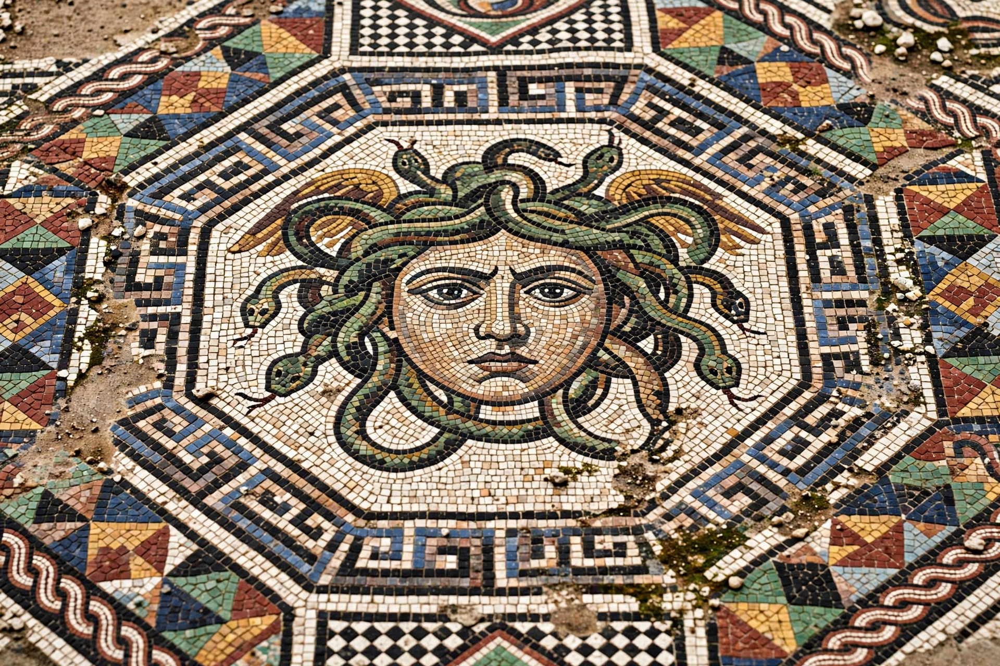

A mosaic is a pattern or image made of small regular or irregular pieces of coloured stone, glass, or ceramic, held in place by plaster or mortar and covering a surface. Mosaics have a long history, starting in Mesopotamia in the 3rd millennium BC. The individual pieces are called tesserae.

| Mosaic | |
|---|---|
| Materials | Stone, glass, ceramic tesserae; plaster/mortar bed |
| Techniques | Opus tessellatum; opus vermiculatum; opus sectile |
| Famous examples | Alexander Mosaic (Pompeii); Ravenna church mosaics; Madaba Map |
In the Roman opus tessellatum method, tesserae of roughly uniform size were set into a prepared mortar bed, often following a painted or incised guide. Opus vermiculatum used much smaller tesserae to achieve painterly detail, as in the Alexander Mosaic from Pompeii (c. 100 BC), depicting Alexander the Great in battle. Opus sectile used larger cut pieces fitted together like a jigsaw. Byzantine workshops used glass tesserae, including gold-leaf glass, set at slight angles to catch the light — the shimmering gold grounds of Byzantine art.
Pebble mosaics appeared in the Greek world by the 5th century BC; the Macedonian capital Pella had sophisticated examples. The Romans spread mosaic floors across their empire — celebrated survivals include the mosaics of Zeugma, Piazza Armerina in Sicily, and numerous floors in Britain, Gaul, and North Africa. Early Christians adapted the medium to wall and apse decoration, culminating in the Byzantine church programmes of Ravenna, Constantinople, and Monreale. Islamic art developed geometric and calligraphic mosaic tilework (zellige), notably in Morocco and al-Andalus. Mosaic was revived in the modern era by artists such as Antoni Gaudí, whose trencadís technique covers the surfaces of Park Güell and the Sagrada Família in Barcelona.
Where fresco binds pigment chemically into wet plaster, mosaic builds images from durable solid pieces; the two techniques were often combined in church decoration, with mosaic reserved for the most important areas and fresco used elsewhere.
Article recreated from memory for the muse-webcrawl project.